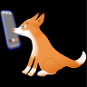

Welcome to ResearchRanger

We have provided this page to bring you more information about the TappyTalker Easy Reads mobile application.
The focus is on word recognition practice for beginning readers. Some of the words are expected to be known prior to kindergarten entry, others are more advanced. There are also some sight words. There is a short reading exercise (text passage) for each word. In each passage the featured word is displayed in a distinctive color. Featured Words:
A "scrambled" version of each featured word is also presented. Using simple drag and drop, each letter of the scrambled word can be dragged to an unscrambled target location. (See the screenshots on the playstore site)
ant, big, cat, dog, at, be, can, do, apple, bear, cap, duck, egg, four, goat, hill, eye, five, go, hop, get, face, got, hot, it, jug, key, lion, in, jet, look, lake, is, jar, cake, legs, me, not, owl, pig, may, nut, out, pot, mom, nose, on, pan, quick, run, sun, tail, up, quiet, rub, sit, top, but, quack, red, see, tiger, cup, very, two, box, you, zap, over, woods, axe, yam, buzz, have, wet, six, my zebra, wolf